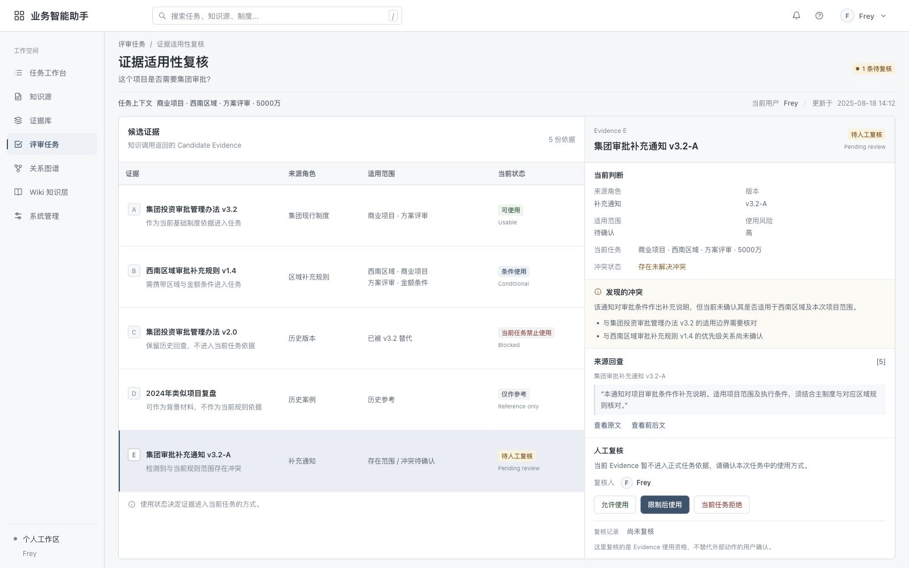

The Business AI Assistant brings Task Context, Candidate Evidence, Evidence Eligibility, and human review into one workflow. Policies, regional rules, superseded versions, and historical cases are not merely retrieved—they are verified, checked for applicability, and returned to the task for the next step.
The endpoint of a knowledge service is not an answer—it is evidence the task can actually use.
Found does not mean usable.
Relevance ≠ Eligibility
The same Candidate Evidence can be usable, conditional, reference-only, pending review, or blocked for the current task.

Human Review
Usable
Ready to use
Conditional
Use with conditions
Reference Only
Background only
Pending Review
Awaiting review
Blocked
Do not use
Project Snapshot 30-Second Summary
01 | Representative Task
Prepare for a cross-functional project review
Find policies and cases, fill in context, and assemble verifiable evidence that lets the task proceed.
AI:Organize Evidence and candidate judgments Human:Confirm applicability, High-impact Use, and final responsibility
A01 | Product Evolution
Each stage added a new product responsibility—not just another feature.
From Raw Evidence and Call Control to Evidence Eligibility, Knowledge Graph, and Wiki, each stage was triggered by a real gap exposed by the previous one.
StageGap ExposedNew ResponsibilityEvidence Level
01 | V1 Raw Evidence
Gap Exposed
Relevant content was retrievable, but sources and traceback were unreliable.
New Responsibility
Build source intake, Chunk processing, indexing, Citation, and Raw Evidence.
An authentic source may still be ineligible for the current task.
New Responsibility
Add version, scope, conflict, risk, and HITL checks.
Evidence Level
Product rules and interaction design
04 | Knowledge Graph + Wiki
Gap Exposed
Versions, aliases, and regional rules created cross-document relationships and a need to maintain stable knowledge.
New Responsibility
Re-evaluate the capability boundary: retain the minimal Knowledge Graph relationship layer, stop building a Full Domain Ontology, integrate mature Wiki capabilities, and keep Raw Evidence as the source of truth for traceback.
Evidence Level
Knowledge Graph design / Wiki integration design
A02 | Final Product Experience
What product did these decisions ultimately shape?
One Business AI Assistant connects the Task Workspace to Evidence Retrieval, Source Traceback, Call Control, Evidence Eligibility, Knowledge Graph, and persistent Wiki organization.
Task Workspace
Knowledge as a capability the task can invoke
Task Context invokes knowledge capabilities; Evidence, missing conditions, and interim judgments return to the current task.
Evidence Retrieval
Find Candidate Evidence from Task Context
Top-K returns current policies, regional rules, historical versions, and reference cases.
Citation Trace
Trace the answer back to Raw Evidence
Candidate excerpts enter Evidence Context; the answer and Citation retain source_path for traceback.
Call Control
When to retrieve, stop, or request confirmation
Route / Clarify / Retrieve / Confirmation place knowledge calls within the task workflow.
Evidence EligibilityEligibility
Can the current task use what was found?
Version, scope, conflict, and risk determine current Evidence Eligibility.
Knowledge Graph
Versions, aliases, and cross-document relationships
Graph Context represents stable relationships; Raw Evidence preserves source traceback.
Persistent Wiki Knowledge Layer
Maintain stable knowledge with source traceback
Wiki organizes knowledge and navigation; Citation leads back to Raw Evidence.
A03 | Key Product Decisions
Which capabilities can be reused, and which responsibilities must stay in the product?
Mature capabilities can be reused, but task boundaries, evidence eligibility, and final responsibility still need to be defined by the product.
USE
Use Mature Capabilities
Local files / Obsidian
Ollama / local models
Embedding
Chroma
FastAPI
Mature Wiki capabilities
INTEGRATE
Integrate into the Product
Raw Evidence → search_docs
Route / Task Context
Eligibility
Graph Context
Wiki Adapter
Raw / Wiki / Hybrid
BUILD / RETAIN
Keep Core Responsibilities in the Product
Source Intake
Source / version / applicability scope
Evidence Mapping
Conflict / risk
Human Confirmation
Eligibility for the current task
Final responsibility for business use
STOP
Stop Rebuilding What No Longer Needs to Be Built
Do not train models from scratch
Do not build a general-purpose knowledge platform
Do not build a complete Wiki product
Do not add Planner / Multi-Agent just to demonstrate complexity
No automatic writeback / deletion / publishing
Do not build generic enterprise capabilities without a real task
Do not build a Full Domain Ontology
Keep only the minimal relationship layer the current task needs, not a general-purpose enterprise graph platform
Raw Evidence preserves facts and traceback, Knowledge Graph stabilizes entities and relationships, and Wiki maintains knowledge organization and navigation. Route determines what the task invokes; Eligibility determines whether the current evidence can be used. People confirm High-impact Use and retain final responsibility.
Becoming Standardized
01
Model Capability
Can it generate?
02
Retrieval Capability
Can it find the right evidence?
03
Call Control
When should it invoke knowledge?
→
Requires Product Judgment
04
Evidence Eligibility
Can this evidence be used for the current task?
05
Action Confirmation
Is the system allowed to proceed?
06
Final Responsibility
Who confirms, and who remains accountable?
Four product responsibilities I owned
01
Define the problem from a real task
Start with “I remember the conclusion but cannot recover the full evidence,” then define retrieval, context reconstruction, and material verification tasks.
02
Decide what to reuse, integrate, or retain
Separate mature capabilities, integration work, and responsibilities that must stay in the product workflow.
03
Turn failures into product rules
Define explicit rules for source filtering, Path Refresh, missing conditions, version conflicts, and source traceback.
04
Define the AI–human responsibility boundary
AI supplies Evidence and candidate judgments; people confirm applicability, High-impact Use, and final responsibility.
A04 | Current Scope
Where does the product stop—and what would justify expanding it again?
Reopen a capability only when a new real-world task clearly exceeds the current boundary.
Current Scope
Knowledge tasks grounded in local sources
Local knowledge sources
Source retrieval and context reconstruction
Multi-source comparison
Project materials with traceable sources
Persistent knowledge organization
Outside the Current Scope
Capabilities beyond the current task boundary
A production enterprise collaboration product
A full permissions and knowledge governance platform
An autonomous execution Agent
A commercial SaaS product
Large-scale deployment and operations
Four conditions for reopening the boundary
Condition 01
Collaboration becomes a sustained real-world need
Condition 02
Eligibility rules hold consistently across more real tasks
Condition 03
Recurring business actions can be explicitly authorized
Condition 04
The current model, retrieval, or local runtime becomes a real bottleneck
Start with a real retrieval problem, and define V1: find evidence, verify sources, and stop unsupported answers
Build a working local knowledge pipeline to test whether sources can be found, verified, and used for the next judgment.
1.1 The starting problem: remembering a conclusion, losing its evidence
Searching my local files exposed a concrete problem: I remembered conclusions but could not recover their full evidence. Enterprise tasks amplify it. Preparing for a cross-functional review requires checking conditions and evidence scattered across multiple sources.
Who faces it: staff preparing a cross-functional review
What approach did similar projects use?
Does this project trigger an approval process?
Which departments should be involved early?
What risks appeared in similar projects?
Where the evidence lives: sources play different roles
Policies: approval conditions and applicability boundaries
Process guidelines: participating departments and steps
Project retrospectives: outcomes and risks
Meeting notes: context behind earlier discussions and decisions
Missing a condition can lead to repeated revisions, the wrong approval path, or discovering an evidence gap during the meeting.
Sources exist, but users must combine them to reach a judgment. Traditional search finds files while leaving users to determine how they apply to the task.
AI can retrieve relevant information, organize Task Context, and flag missing conditions to prepare users for judgment.
Retrieval is the starting point. Knowledge must be trustworthy in use and help the business task proceed.
1.2 V1 goals: retrieve evidence, trace sources, stop when conditions are missing
Test the pipeline with concrete task questions within a bounded knowledge set. Validation checks three things:
① Retrieve the right evidence
Can a specific business question retrieve relevant excerpts rather than merely keyword-similar files?
② Let users verify the evidence
Does the answer identify its sources and let users verify the original text?
③ Stop unsupported answers
When key conditions are missing, does the system identify them instead of inventing a complete-looking answer?
1.3 MVP scope: validate retrieval → Citation → human verification
Build a working pipeline within a limited scope to validate one core loop, rather than a full enterprise AI platform:
Core Loop
01
Describe the task and known conditions
↓
02
Retrieve relevant excerpts
↓
03
Combine sources and applicability conditions
↓
04
Answer with original source evidence
↓
05
Ask users to supply and confirm missing conditions
Implemented in This Stage
✓ Local knowledge base
✓ RAG retrieval pipeline
✓ Source Citation display
✓ Representative task testing
Out of Scope
× Enterprise permissions
× Multi-user collaboration
× Automatic changes to business data
× Automatic external task execution
1.4 Technical starting point: working RAG before Agent Call Control
Why start V1 with RAG before building an Agent?
V1 first had to find the right evidence for a real question and let a person verify it. Automatic execution comes later.
Unreliable retrieval and Citation would carry errors into tools and automatic execution.
First make retrieval and Citation work; then add task orchestration.
B02User Tasks and Requirements
Break down cross-functional review preparation: from manual research to a verifiable evidence workflow
Use a representative task to turn research into specific actions, failure points, and product requirements.
Business AI Assistant OverviewThe business task forms Task Context, invokes knowledge capabilities, organizes Evidence, conditions to confirm, and interim judgments, then returns them to the task.
2.1 Representative task: prepare for a cross-functional project review
Map the gaps found in personal local-file retrieval to cross-functional review preparation.
Representative Role
Staff preparing a cross-functional project review
Trigger
A new project is entering review; rules, past experience, and material completeness need checking.
Input
Project or proposal details, approval policies, process guidelines, similar-project retrospectives, and meeting notes.
Task Outcome
Assemble evidence that can be checked, completed, and brought into review—not just an AI answer.
2.2 Current workflow: policies, cases, context, and review checks
01
Confirm the project and known conditions
Identify the project type, current stage, and available information.
Failure Point
The current conditions are incomplete.
02
Search policies and process documents
Check approval triggers, required steps, and participating departments.
Failure Point
The rule is known to exist, but its filename or section is forgotten.
03
Find similar historical projects
Review past approaches, differences, and risks.
Failure Point
A similar case is found, but its conditions differ.
04
Reconstruct process and discussion context
Policies define rules; meeting notes and retrospectives explain earlier judgments.
Failure Point
Sources may contain conflicting versions or views.
05
Prepare pre-review checks
Separate available evidence, missing information, and questions requiring Human Confirmation.
Failure Point
Unnoticed gaps can cause repeated revisions or surface only during the review meeting.
2.5 AI / human boundary: AI organizes Evidence; people confirm applicability and final materials
AI Responsibilities
Find relevant sources
Extract original evidence
Compare sources
Flag conflicts or missing conditions
Organize candidate review checks
Return Evidence, missing conditions, and pending items to the task
Human Responsibilities
Confirm current project conditions
Judge rule applicability
Resolve conflicting information
Confirm final materials
Decide whether to proceed
Key Decision
Why must the product deliver more than an answer?
Users must bring this information into a real task. An answer cannot support review preparation without source traceback, applicability conditions, and a way to return gaps and next steps to the task.
Deliver trusted context the task can use: traceable Evidence, explicit applicability conditions, pending items, and next actions.
B03V1 Build and Implementation
From local files to answers with Citation: build the V1 RAG end-to-end pipeline
Evidence Level | Working Runtime Prototype
Follow the same anonymized approval sources through intake, parsing, indexing, retrieval, and cited answers, with intermediate artifacts at each step.
Independently built local MVP · 2020 Intel i5 / 16GB / no dedicated GPU. Models, indexes, and UI run locally; original sources are read-only by default.
3.1 Source intake: index only allowlisted sources
Source Intake Strategy
Allowlisted source intake
Sources
Obsidian / Markdown notes and local documents
.md · .txt · .docx · .pdf · .pptx
→
Directory and File Intake
Allow: Configured directories and file types.
Skip: Hidden files, temporary files, and excluded directories. Exclusion settings keep archived, irrelevant, and sensitive sources outside the scope.
→
Enter the Pipeline
sources.py Discover allowed files.
convert.py Read or convert content, then pass it to the indexer.
Source Intake Record
File
Intake Result
Source / Reason
集团投资审批管理办法_v3.2.md
Included
Markdown / approval policy
西南区域审批补充规则_v1.4.md
Included
Markdown / regional rule
.~审批办法临时文件.docx
Skipped
Temporary file
Original files remain the source of truth.The system builds a searchable index; conversion caches are intermediate artifacts. Users verify the original file. Updates rebuild the index without maintaining a second copy of the knowledge content.
3.2 Document parsing: MD / TXT / DOCX / PDF / PPTX → unified text
Document Processing Strategy
Multi-format parsing + text normalization
convert.py Read or convert content into unified text that retains the original path, then pass it to Chunk processing and indexing.
Markdown / TXT
→
ProcessingRead text, paragraphs, and identifiable headings directly.
→
Traceback FieldsTrace to the original path; Markdown headings can identify sections.
For a Commercial Project in Design Review, when the specified amount threshold is met, approval is handled by the Group Investment Decision Committee.
source_path
集团投资审批管理办法_v3.2.md
PDF / PPTX parsing extracts available text and retains the original path for traceback.
V1 first stabilizes sources with directly extractable text. Scanned documents are not yet treated as reliable sources.
3.3 Chunk and Metadata: preserve source fields during splitting
Pass unified text to ingest.py, create Chunk Records with traceback fields, generate vectors, and write them to Chroma. The main policy excerpt is policy_approval_023.
Unified Text
convert.py
Content + original path
→
ingest.py
Paragraph-first splitting
About 1200 characters; about 150 characters of overlap for long windows
Paragraph-first: Merge short paragraphs first to preserve complete semantic units.
Length fallback: Keep long content to about 1200 characters per Chunk.
Sliding overlap: Overlap adjacent windows by about 150 characters to reduce cuts between rules and exceptions.
Too large: A Chunk mixes topics; vector similarity does not make all its content relevant, so unrelated text reaches the model.
Too small: Rules, conditions, and exceptions separate, leaving generation with only part of a rule.
Boundary Truncation Example
In one approval document, Chunk A describes projects requiring Group Approval; the next paragraph lists exceptions. Retrieving only Chunk A can omit them. Overlapping long windows preserve neighboring context.
One Chunk Record | policy_approval_023
Metadata Strategy
Retain source Metadata
Traceback fields retained in the current Chunk
source_path
集团投资审批管理办法_v3.2.md
title
Group Investment Approval Policy v3.2
source_type
Formal policy
chunk_id
policy_approval_023
heading
Group Approval Scope
Chunk Content and Index Record
chunk_text
The Group Investment Approval Policy v3.2 states that a Commercial Project in Design Review requires approval by the Group Investment Decision Committee when the specified amount threshold is met.
Write to Chroma
Record ID: policy_approval_023 Store vector, chunk_text, and the traceback fields shown on the left.
EmbeddingGemma runs locally through Ollama and generates vectors in small batches. Chroma stores vectors, source text, and traceback fields in one record for retrieval and verification.
3.4 Path Refresh: replace old Chunks when the same path changes
Index Refresh Strategy
Path Refresh + whole-file replacement
Before Refresh
集团投资审批管理办法_v3.2.md Same source_path → old index records
After Refresh
Same source_path → new Chunks Old Chunks no longer participate in retrieval
Source File Updated
The policy file changes; the user triggers a refresh
→
Locate source_path
Find records to replace using the original file path
→
Parse and Split
Prepare new text and Chunks
→
Delete Old Chunks
Remove old index records for the same path
→
Regenerate Embeddings
Generate vectors for new Chunks
→
Write New Index Records
Chroma stores the updated file content
Replace the whole file; do not simply append.After parsing and splitting, delete old Chunks for the same path, generate new vectors, and write them to Chroma. Old and new content from one file must not both enter retrieval.
Source Intake and Indexing Sources pass through parsing, Chunk, Metadata, Embedding, and Chroma indexing, with refresh by source_path.
3.5 Top-K retrieval: turn a business question into Candidate Evidence
Test retrieval with the same approval question. Current policy, regional supplements, superseded policy, and historical cases return as Candidate Evidence.
Return Top-K Chunks, sources, and traceback fields
Top-K = 5 baseline.Four representative candidates are shown below with source files and chunk_id. EmbeddingGemma generates the Query Vector; Chroma returns Chunks, followed by lightweight source_type filtering.
Top-K Candidate Evidence Retrieval Task Context enters vector search, which returns Top-5 Candidate Evidence. The current policy and regional rule are selected to form Evidence Context.
3.6 Evidence Context: generate answers with Citation and Source Traceback
ask.py numbers candidate excerpts to form Evidence Context, then sends it to local Qwen for generation. The same numbers connect the answer, Chunk, and source file.
Prompt Strategy
Evidence-grounded generation + Citation constraints + refusal when evidence is insufficient
Three Prompt Constraints for This Answer
Numbered candidate Chunks include original text, source, path, and identifiable headings.
Evidence-grounded generation:
Ground the answer in the retrieved text.
Citation constraints:
Citation numbers map to input Chunks for verification.
Insufficient-evidence refusal:
Report insufficient evidence; do not invent a business conclusion.
Query
Current Question
→
Top-5 Evidence
Source candidates under the current baseline
→
Bounded Context
ask.py Number source text, paths, sources, and headings
→
Qwen3:0.6B
Generate locally through Ollama
→
Answer + Sources
Natural-language answer with numbered Citation; the UI also returns source excerpts
Evidence Context | [1] Main Policy
source_path
集团投资审批管理办法_v3.2.md
chunk_id
policy_approval_023
text
The Group Investment Approval Policy v3.2 states that a Commercial Project in Design Review requires approval by the Group Investment Decision Committee when the specified amount threshold is met.
Evidence Context | [2] Regional Rule
source_path
西南区域审批补充规则_v1.4.md
chunk_id
southwest_region_approval_011
text
Commercial Projects in the Southwest Region at Design Review follow the Group Approval process when the approval amount is RMB 50M or above.
Answer + Citation
“Based on the retrieved policies, a Commercial Project in Design Review must enter Group Approval when the applicable amount condition is met.[1][2]”
Sources
[1] 集团投资审批管理办法_v3.2.md [2] 西南区域审批补充规则_v1.4.md
Source Traceback
[1][2] → original Chunk / source_path. Verify the cited excerpt, then open the original file by its path.
Evidence-grounded Answer and Citation Trace Generate an interim answer from Evidence Context. Citation identifies the source, section, and original excerpt.
Report insufficient evidence rather than use model knowledge to supply a business conclusion.
3.7 FastAPI + Web UI: expose search, answers, refresh, and status
Early Validation
Validate the pipeline with a simple CLI / Streamlit prototype
→
Script Capabilities
search.py / ask.py / ingest.py
→
FastAPI
app.py Expose search, answer, index, and status endpoints
→
Local Web UI
Enter questions, inspect candidates, answers, and sources, manage indexing, and view logs
FastAPI exposes script-based search, answers, and indexing, with the local Web UI as the first consumer. The same interface makes knowledge callable by later workflows using Task Context to request Candidate Evidence, sources, and missing conditions.
Original files remain read-only by default; users trigger index updates.
B04V1 Validation and Iteration
Validate V1 with 10 representative questions: from first-round results, Bad Case to Regression Testing
Evidence Level | Working Runtime + Small-Sample Validation
Start with the 10-question test and follow the same approval task through failures, diagnosis, adjustments, and regression results.
4.1 Validation set: 10 questions across four key scenarios
I selected 10 representative questions from local sources to test the pipeline. The same anonymized approval task covers rule lookup, historical cases, multi-source synthesis, and missing conditions.
Rule / Fact Lookup
3 questions
Q02 | What is the currently valid version of the Group Investment Approval Policy?
Q03 | What Group Approval threshold applies at Design Review?
Q04 | Does the Southwest Region have supplementary approval requirements?
Check: retrieval hit + Source Traceback
Historical Cases / Context Reconstruction
3 questions
Q05 | Is there a review retrospective for a similar Commercial Project in 2024?
Q06 | What materials were added during approval of similar historical projects?
Q07 | What recurring concerns appear in meeting notes from similar projects?
Ground generation in Evidence, constrain Citation, and refuse when evidence is insufficient.
These errors occur at different layers; Prompt changes alone cannot solve all three.
4.4 Targeted fixes: three representative Bad Cases
Bad Case Log
Case
Observed Behavior
Failure Layer
Root Cause
Response
BC01
High relevance ≠ the right candidate
Retrieval
Candidate Set / Retrieval Scope
Metadata / Retrieval Scope
BC02
A rule is cut in half
Chunk / Retrieval
Chunk Boundary / Retrieval Coverage
Chunk adjustment + coverage
BC03
A complete answer despite missing conditions
Task / Generation Control
Task Condition / Prompt Stop
Stop the full conclusion when conditions are missing
Case 01
High relevance ≠ the right candidate: why Rerank was not added first
Metadata Filtering
Issue
Query: “Does this project require Group Approval?” For a Southwest Region Commercial Project at Design Review / RMB 50M, Top-K may return current policies, regional rules, old versions, and historical cases. Historical wording may match the Query more closely and rank higher without being more suitable for the task.
Judgment
Rerank can improve semantic ordering within the candidate set. It cannot independently determine version validity, regional scope, source role, or applicability. The primary gap is a candidate scope that does not sufficiently express business boundaries.
Response
V1 prioritizes Retrieval Scope and Metadata constraints, using retained source_type / path for lightweight source filtering and visible sources with Citation. This narrows the set and reduces historical or out-of-scope material. Rerank is not enabled in the V1 runtime; it remains a later optimization for ordering within the candidate set.
Next
Even correct ordering does not establish whether Evidence can be used for the task. A later Eligibility Gate handles that judgment. Rerank solves ranking, not applicability.
BC01 · Decision Record
Primary Layer
Retrieval
Root Cause
Candidate Set / Retrieval Scope
Option
What It Addresses
Current Decision
Rerank
Improve semantic ordering within the candidate set
Deferred
Metadata / Retrieval Scope
Narrow the candidate set; reduce wrong regions, wrong source roles, and historical versions
Priority
Eligibility
Determine current Evidence Eligibility
Later V3
Case 02
A rule is cut in half
Chunk Strategy
Before | Failure
Within one approval document: Chunk A: “Which projects require Group Approval…” Next paragraph: “The following cases are exceptions…” Only Chunk A was retrieved; exceptions did not enter Context.
Cause
Approval triggers and exceptions fall on opposite sides of a Chunk boundary: a splitting and retrieval coverage failure.
Fix
Paragraph-first + fixed-length fallback + about 150 characters of overlap.Merge short paragraphs; split long content at about 1200 characters with overlapping context between windows.
After | Check
Rerunning similar approval questions brings both triggers and neighboring exceptions into Context. Generation sees the rule and its exceptions instead of drawing a conclusion from half a rule.
Case 03
A complete answer despite missing conditions
Prompt Strategy
Before | Failure
Query: “Does this project require Group Approval?” Without project type, region, amount, and stage, V1 still tends to combine retrieved material into a complete answer.
Cause
The task conditions are incomplete, not merely unretrievable. The Prompt lacks an explicit stop condition.
Fix
Evidence-grounded generation + Citation constraints + refusal when evidence is insufficient.Require retrieved text to support conclusions and report insufficiency when key conditions are missing.
After | Check
Rerunning questions with missing conditions stops the complete business conclusion. The system reports insufficient information and identifies missing project type, region, amount, or stage. V1 uses Prompt-level refusal and missing-condition notices. B05 adds structured Clarify.
BC01 · Before / After
Before
After
Top-K may mix current policies, regional rules, historical versions, and cases
Use Task Context + source_type / path to narrow the main candidate set
Semantic relevance does not express source roles or regional boundaries
Prioritize current policy + Southwest rules in the main candidates
Historical material may rank higher because its wording matches the Query
Historical cases remain retrievable with their reference role preserved
Rerank not enabled
Keep Rerank as a later optimization for ordering within the candidate set
4.5 Regression testing: original question + nearby variants
Rerun the original question and five nearby variants; record retrieval, Citation, and stop behavior as inputs change.
Input: Commercial Project / Southwest Region / Design Review / RMB 50M. Result: retrieve current policy and Southwest rules with sources; historical cases no longer serve as the main rule basis.
B | Change project type
Result: rematch applicability for the new type; do not automatically reuse the Commercial Project rule.
C | Change amount
Result: recheck the approval threshold; do not reuse the prior RMB 50M judgment.
D | Missing amount
Result: stop the full approval conclusion and identify the missing amount.
E | Historical case and current policy both retrieved
Result: current policy remains the main rule basis; historical cases provide background rather than replace it.
Regression Record
Batch
V1 iteration
Date
2025-08
Owner
Frey
ID
Case
Query Variant
Expected Behavior
Result
R01
BC01
Does an RMB 50M Southwest Region Commercial Project at Design Review require Group Approval?
Current policy and Southwest rules enter the main candidate set
As expected · Pass
R02
BC01
Find a similar Southwest Region Commercial Project for reference
Allow historical cases as candidates while preserving their reference role
As expected · Pass
R03
BC02
After meeting the Design Review approval threshold, what regional conditions also apply?
Return the complete approval threshold and regional conditions, not half a rule
As expected · Pass
R04
BC03
Does this Commercial Project require Group Approval?
Without region, stage, and amount, request missing conditions instead of a final approval conclusion
As expected · Pass
R05
BC03
Does an RMB 50M project require Group Approval?
Without project type, region, and stage, stop the full conclusion and request completion
As expected · Pass
4.6 Stage result: retrieval works; request control comes next
V1 defaults to the same retrieval pipeline. V2 reads Task Context and action risk to select a Route. Route defines the next handling step, not just an intent label.
Routing Result
User Input
“Does this project require Group Approval?”
Known Information
Project name / current question; task conditions are incomplete
Route
Clarify
Reason
Private enterprise approval rules are needed, but required task conditions are missing
Missing conditions
Project type / region / stage / amount
Next Step
Complete conditions before calling search_docs
Five Routes ComparedDifferent request types for comparison; this task starts with Clarify
A
“How do RAG and fine-tuning differ?”
No private enterprise facts are required; explain directly.
Direct
B
“Why was this project decided that way last year?”
Requires local historical sources and a cited answer.
Retrieve
C
“Does this project require Group Approval?”
Project type, region, stage, and amount are missing; no direct conclusion is appropriate.
Clarify
D
“Write this conclusion into the review materials.”
The request would change external state and requires confirmation.
Confirmation
E
Execution conditions are unmet, or the request exceeds tool capabilities
Router can send a request directly to Blocked when permissions, tool capabilities, or required execution conditions are clearly unmet.
Blocked
5.2 Clarify: complete project type / region / stage / amount first
The first request asks only whether Group Approval is needed. Check the four required conditions before invoking retrieval.
Still traceable, but different source roles do not make them current rule evidence.
03
Group Investment Approval Policy v2.0
Path 集团投资审批管理办法_v2.0.md
Chunk policy_approval_v2_008 · Citation [3]
04
2024 Similar-Project Retrospective
Path 2024年类似项目复盘.md
Chunk project_review_2024_006 · Citation [4]
5.4 Task Context: preserve confirmed conditions across turns
When users add conditions across three turns, the last Query alone is insufficient. Update Task Context each turn, then check completeness.
Round 1
User: “Does this project require Group Approval?”
Project Typeproject_type
—
Regionregion
—
Stagestage
—
Amountamount
—
Current Routecurrent_route
Clarify
Round 2
User: “Commercial Project, Southwest Region.”
Project Typeproject_type
Commercial Project
Regionregion
Southwest Region
Stagestage
—
Amountamount
—
Current Routecurrent_route
Clarify
Round 3
User: “Design Review, RMB 50M.”
Project Typeproject_type
Commercial Project
Regionregion
Southwest Region
Stagestage
Design Review
Amountamount
RMB 50M
Current Routecurrent_route
Retrieve
Short-Term Task StateRetain only confirmed information for this task
Retained in the Task
Project Type
Region / current stage
Amount / scope
Confirmed source scope
Conditions just confirmed by the user
Current Route / step
Not Automatically Retained
Model-inferred conditions not confirmed by the user
Unverified business conclusions
Automatic promotion to long-term enterprise knowledge
Direct reuse of another task's conclusion
Task switch → Reset current Task Context.
5.5 Confirmation Gate: pause before external writeback
Retrieval and answers only change page information. Writing review materials changes external task state. Confirmation asks whether the user authorizes that action; B06 Eligibility determines whether the Evidence applies.
Route:ConfirmationPending Action:Write review materialsExecution:PausedEvidence Eligibility:To be determined
“Write the candidate judgment and cited evidence into these review materials. Continue?”
User Confirms
Confirmation = Confirmed
Allow further checks; proceed to Action only when all conditions pass.
User Rejects
Confirmation = Rejected
Blocked / Stop; no external state change.
Scenario · Route / Action
Information-only query
Direct / Retrieve
Required conditions missing
Clarify
External writeback requested
Confirmation
User has not confirmed
Blocked / Stop
Permissions / capability boundary unmet
Blocked
No traceable Candidate Evidence
Report insufficient evidence; Clarify or Stop
The current MVP does not automatically perform external writeback. Confirmation only authorizes continuation; Evidence Eligibility, permissions, and tool conditions must also pass before execution. External state remains unchanged until then.
5.6 Full control chain: Route / Task State / Confirmation
System overview of 5.1–5.5: routing, condition branches, task-state loops, and confirmation gates work together. Section 5.7 records the states and artifacts for this request.
Full Control ChainSystem Overview · Conditions / State Loops / Confirmation Gates
Blocked / StopUnconfirmed or rejected · No external state change
Yes
Permissions / tools / execution conditions met?
No
BlockedConditions unmet · Do not execute
Yes
Proceed to External ActionEvidence Eligibility and execution checks both pass
Full Control Chain | Router can send requests directly to Blocked when permissions, capability, or execution boundaries are exceeded. Other external actions enter Confirmation, then continue through execution checks.
Review Task Execution DetailAfter conditions are completed and knowledge is invoked, writeback remains a Pending Action. Evidence Eligibility is still unresolved; execution stays paused.
Request TraceThis Approval Request · States, Inputs, and Artifacts
01
Input | First Routing Decision
“Does this project require Group Approval?”
Route = Clarify; project type / region / stage / amount are missing. Do not call search_docs.
02
Clarify | Identify Missing Conditions
“Please provide project type, region, current stage, and amount.”
Execution = Paused. Show content and target; await required checks and user confirmation. No confirmation means no external state change. Confirmation still requires Evidence Eligibility and execution checks.
One request: Clarify → Retrieve → Confirmation. User confirmation allows continuation; it does not establish Evidence Eligibility. B06 makes that judgment.
5.8 Stage result: calls are controlled; Evidence Eligibility remains unresolved
All four search_docs candidates trace to sources. Being retrievable does not make them usable for this approval decision.
Progress in This Request
Missing conditions: Clarify
Four conditions complete: update Task Context, then Retrieve
Retrieval returns four Candidate Evidence items
Writeback requested: Confirmation / Pending Action; pause for authorization
What These Four Sources Still Need
Group Investment Approval Policy v3.2
Does the current formal policy's scope match?
Southwest Regional Approval Supplement
What limits apply to the Southwest Region and RMB 50M threshold?
Group Investment Approval Policy v2.0
Can the old version support the current judgment?
2024 Similar-Project Retrospective
Can a historical approach be treated as a current rule?
If two formal sources conflict, neither can be chosen arbitrarily.
B06V3 Eligibility
After search_docs, add an Eligibility Gate: assess Evidence Eligibility for the current task
Evidence Level | Product Rules / Key Interactions
Add version, applicability, conflict, and usage risk to Raw Evidence, moving from an authentic source to evidence usable for this task.
Continue B05's anonymized task: Commercial Project / Southwest Region / Design Review / RMB 50M, owned by the Group Investment Decision Committee. A–D come from retrieval; E demonstrates conflict review.
Candidate Evidence→Eligibility Fields→Eligibility Rules→Eligibility Gate→Evidence Eligible for the Task
6.1 Usage risks: old versions / historical cases / scope / conflicts / High-impact Use
Use B05's four candidates plus an anonymized conflicting source E. Check each for potential misuse in the same approval task.
01
Superseded Policy
Evidence C | Group Investment Approval Policy v2.0
Superseded by v3.2. Still traceable, but not a currently valid rule.
02
Historical Project Case
Evidence D | 2024 Similar-Project Retrospective
The historical handling is authentic but specific to that project; it cannot automatically become current policy.
03
Limited Applicability
Evidence B | Southwest Regional Approval Supplement
Applies only to Commercial Project / Southwest Region / Design Review / RMB 50M or above. These conditions must accompany its use.
04
Conflicting Sources
Evidence E | Group Approval Supplementary Notice v3.2-A Compare Evidence A | Group Investment Approval Policy v3.2
The two sources have an unresolved conflict; neither can be arbitrarily chosen for the approval conclusion.
Even broadly matching Evidence requires Human Review for these uses.
6.2 Eligibility fields: version / scope / conflict / risk
Preserve the source text and Citation from search_docs, add task-specific judgment fields, then determine usage status. Evidence A shows the before and after.
The Group Investment Approval Policy v3.2 states that a Commercial Project in Design Review requires approval by the Group Investment Decision Committee when the specified amount threshold is met.
After | Task-Specific Judgment Fields
Add usage conditions without changing source text
Source Typesource_type
Formal policy
Version Statusversion_status
Currently valid
Applicability Scopeapplicable_scope
Commercial Project / Design Review / specified amount threshold met
Task Match
Basic applicability matches; Evidence B supplies region and the specific amount threshold.
Supplementary Conditions
Evidence B | Southwest Regional Approval Supplement
Conflict Statusconflict_status
No unresolved conflict found
Usage Riskusage_risk
Standard
Result | Rule Evaluation
UsableUsable
Use as the current main policy basis; combine with Evidence B for this task's region and amount conditions.
Keep a Review Record When Uncertainty Remains
Write the reviewer, note, and time into task judgment fields without changing Raw Evidence. Section 6.4 shows the conflict record.
Reference OnlyReference OnlyBackground Context only Not a final rule basis
Pending ReviewPending Review
Pause↓HITL↓Human Review↓Write Back Review Result↶Re-evaluate Eligibility
BlockedBlockedExclude from the Current Task
Pending Review → Pause → HITL Human Review → Write back resultRetain reviewed_by / review_note / reviewed_at, recheck fields and rules, then restore an allowed path or keep Blocked. Review does not automatically make Evidence Usable.
Figure B06-01 | Evidence Eligibility and Human Review control chain.
Evidence A | Eligibility Processing Record
01
Input | Evidence A
Group Investment Approval Policy v3.2 retains its path, policy_approval_023, and Citation [1]. Task: Commercial Project / Southwest Region / Design Review / RMB 50M.
02
Read Judgment Fields
Source Typesource_type
Formal policy
Version Statusversion_status
Currently valid
Applicability Scopeapplicable_scope
Commercial Project / Design Review / specified amount threshold met
Task Match
Basic applicability matches; Evidence B supplies region and the specific amount threshold.
Supplementary Conditions
Evidence B | Southwest Regional Approval Supplement
Conflict Statusconflict_status
No unresolved conflict found
Usage Riskusage_risk
Standard
03
Match Eligibility Rules
Current formal policy + valid version + basic applicability match + no conflict + standard risk.
04
Determine Usage Status
UsableUsable
05
Apply Product Action
Enter the task as the main policy basis with original text and Citation; combine Evidence B for region and amount conditions.
Evidence E | Status Change After Human Review
01
Initial Result | Evidence E Conflicts; Pause Task Use
Group Approval Supplementary Notice v3.2-A has an unresolved conflict with Group Investment Approval Policy v3.2.
Conflict status: unresolvedPending ReviewPending Review → Pause task use
02
HITL Human Review | Write Back Note and Result
Reviewerreviewed_by
Business owner
Review Notereview_note
Follow the main policy; the supplementary notice applies only to another project type.
Review Result
Not applicable to this task
Review Timereviewed_at
Record the time when review completes
03
Re-evaluate Eligibility | Scope Is Clearly Inapplicable
Evidence EBlockedBlocked
Retain the original for traceback, but exclude it from the task. Only after excluding E can A and B return to a no-conflict judgment.
B05 controls whether external actions continue; B06 determines whether Evidence can support the current task.
Batch results | A–D continue from B05; E enters conflict review. Task: Commercial Project / Southwest Region / Design Review / RMB 50M.
Source
Key Field Differences
Eligibility
Task Use
A | Group Investment Approval Policy v3.2
Current / basic applicability match / no unresolved conflict
UsableUsable
Add as the main policy with source text and Citation; combine B for region and amount
B | Southwest Regional Approval Supplement
Commercial Project / Southwest Region / Design Review / RMB 50M or above
ConditionalConditional
Add with region / project type / stage / amount conditions; never cite without them
C | Group Investment Approval Policy v2.0
Superseded by v3.2
BlockedBlocked
Historical traceback only
D | 2024 Similar-Project Retrospective
Historical case, not current policy
Reference OnlyReference Only
Background Context only, not the final rule basis
E | Group Approval Supplementary Notice v3.2-A
Initial result: unresolved conflict with the main policy
Pending ReviewPending Review
Pause task use; re-evaluate Eligibility after HITL review
Row E shows its pre-review status. Human Review finds it inapplicable to this task and changes it to Blocked.
6.6 Evidence Card: turn Eligibility status into task actions
Evidence B's Conditional status means adding it with applicability conditions. Other states allow direct use, reference only, review, or block task use.
Evidence B | Current Task Usage Status
V1 | Raw Evidence
SourceSouthwest Regional Approval Supplement
Path西南区域审批补充规则_v1.4.md
Original TextCommercial Projects in the Southwest Region at Design Review follow the Group Approval process when the approval amount is RMB 50M or above.
As capabilities mature, what should we still build—and what should we integrate?
As RAG, Knowledge Graph, and Wiki capabilities matured, continuing to build every knowledge layer in-house no longer made sense. Using LLM Wiki as a reference, I re-evaluated the product boundary capability by capability rather than replacing the existing product wholesale.
Capability
Mature Capabilities & Current Conditions
Decision
Product Responsibility Retained
RAG / Retrieval
Reusable search and vector retrieval implementations exist. LLM Wiki also offers raw-source queries and optional vector semantic search.
RETAIN
Retain Raw Evidence → Citation and the retrieval foundation tied to source_path, Evidence Mapping, and Eligibility. Replacement offers insufficient benefit and would change the evidence contract.
Knowledge Graph
Mature knowledge products offer graph relationships. LLM Wiki provides a graph based on page links and shared sources.
BUILD / RETAINMinimal Business Relationship Layer
The approval task still needs explicit version replacement, department aliases, scope, approval levels, ownership, and regional rules. Build stable, source-constrained business relationships within task boundaries, not a general-purpose enterprise graph platform.
Ontology
A Full Domain Ontology requires ongoing entity hierarchy, relationship semantics, and domain constraints. This approval task works without it.
STOPStop Building a Full Domain Ontology
Retain only the minimal Entity / Relation Schema to constrain allowed entities, connections, and candidate writes.
Wiki
Reusable implementations exist for persistent compilation, page organization, navigation, cross-links, traceback, and incremental updates.
INTEGRATE
Integrate LLM Wiki's persistent organization capabilities. Own the connections and boundaries among Eligibility, Graph Context, Wiki Adapter, Evidence Mapping, and Raw Evidence traceback rather than rebuild a complete Wiki product.
Raw Evidence / Eligibility
General knowledge products provide retrieval, relationships, and organization. This product still defines Evidence Eligibility for its business task.
RETAIN
Keep Raw Evidence, Citation, task Eligibility, conflict / risk judgments, Human Review, High-impact Use confirmation, and final responsibility in the product workflow.
Mature capabilities prompt a layer-by-layer decision: what can be delegated, and what still carries task-specific responsibility?
RAG / Raw Evidence
→ RETAIN
Knowledge Graph
→ BUILD / RETAINMinimal Business Relationship Layer
After the capability boundary re-evaluation, I stopped building a full Domain Ontology. However, version replacement, department aliases, applicability scope, and approval relationships still needed stable representation. B07 therefore keeps only the minimal relationship layer required by the task, while Graph Context continues to connect back to Raw RAG for source traceback.
7.1 Graph scope: derive relationship needs from versions, regional rules, and aliases
Continue answering “Does this project require Group Approval?”. The same approval example exposes three gaps as judgment continues.
Observed Gaps
01
The same question retrieves both v2.0 and v3.2 of the Group Investment Approval Policy.
02
Southwest rules are in another file; the main policy alone is insufficient.
03
Different sources name the same department “Group Investment Committee” and “Group Investment Decision Committee.”
The gaps involve version, exception, and identity relationships, not just missing fields. Metadata already describes project type, region, stage, and amount. I scoped the graph backward from the task and added only connections needed for approval judgment.
Main Judgment Chain for This Approval Task
ProjectProject
Region / stage / project typeCurrent applicability conditions
Relevant policies and version relationshipsPolicy
Approval LevelApproval Level
Responsible DepartmentDepartment
Three Additional Relationship Types for This Judgment
Replace
New Policy Version → Supersedes → Old Policy Version
Except
Regional / special rule → exception to → Group Rule
Conflict
Rule A → conflicts with → Rule B
7.2 Relation Schema: Keep only the relationship constraints the task needs—not a full domain ontology
After re-evaluating the capability boundary, I no longer build a Full Domain Ontology. The task needs stable version, applicability, approval-level, and department relationships. A minimal Entity / Relation Schema constrains which objects and relationships may be written to the graph.
Retained Entities
ProjectProject
Project TypeProject TypeLightweight Entity
PolicyPolicy
DepartmentDepartment
RegionRegion
StageStage
Approval LevelApproval Level
Project Type is a lightweight Entity for applicability relationships. The project retains a type attribute without expanding the entity scope.
Policy retains: version / status / effective date / source file.
Reuse B03's Chunks to design entity and relationship extraction, alias normalization, and Schema checks, then form a Neo4j target structure. The same anonymized excerpt shows each input and mapping.
Relationship Extraction Example | One Chunk, from Source Text to Relationships and Source Mapping
01
Input Original Chunk
Reuse B03's existing Chunk rather than parse the whole file again.
source_path
集团投资审批管理办法_v3.2.md
chunk_id
policy_approval_023
The Group Investment Approval Policy v3.2 states that a Commercial Project in Design Review requires approval by the Group Investment Decision Committee when the specified amount threshold is met.
02
Extract Entity / Relation
Design extraction around the existing local LLM pipeline and predefined Schema. The model proposes entities and relationships; Alias normalization and Schema checks determine what enters the graph target structure.
“…approval is handled by the Group Investment Decision Committee.”
Graph relationships remain grounded in documents. Every relationship traces to supporting Raw Evidence.
7.4 Graph Context → Retrieval Scope: narrow the scope, then return to Chroma
For the same task—Commercial Project / Southwest Region / Design Review / RMB 50M—Graph Query is expected to return relevant policies, versions, approval levels, departments, and regional rules. Map them to Retrieval Scope for search_docs.
Before Integration | Raw RAG Only
Run vector retrieval across the entire allowed knowledge base.
After Integration | Relationship Layer Design
Use entities and relationships to prioritize policies, regional rules, departments, and versions, then retrieve source text through search_docs.
View the full Graph Context → source mapping
Anonymized Task | Graph Context Mapped to Three Source Groups
Task Chain Example | Inputs and Expected Structures for the Same Anonymized Task
Follow input → Graph Context → Retrieval Scope → Raw Evidence → Eligibility → Output after integrating the relationship layer.
01
Input | Confirm Example Task Conditions
Project Type
Commercial Project
Region
Southwest Region
Stage
Design Review
Amount
RMB 50M
02
Graph Context | Current Objects and Relationships
Policy
Group Investment Approval Policy v3.2
Approval Level
Group Approval
Owner
Group Investment Decision Committee
Version
v3.2 SUPERSEDES v2.0
Regional Rule
Southwest Regional Approval Supplement
03
Retrieval Scope | Bound Example Sources
Example Retrieval Scope
Group Investment Approval Policy v3.2 Southwest Regional Approval Supplement Group Investment Decision Committee materialsRetain Group Investment Approval Policy v2.0 for historical traceback, not current rules.
The first two Evidence items support the judgment. Department material is supplementary retrieval scope, not required evidence for this conclusion.
04
Raw Evidence | search_docs / Chroma Source Traceback
“The Group Investment Approval Policy v3.2 states that a Commercial Project in Design Review requires approval by the Group Investment Decision Committee when the specified amount threshold is met.”
Supported Conditions
Commercial Project / Design Review / Group Approval at the amount threshold / owned by the Group Investment Decision Committee.
Raw Evidence B | Regional Supplement
Source
西南区域审批补充规则_v1.4.md
chunk_id
southwest_region_approval_011
Anonymized Source Text
“Commercial Projects in the Southwest Region at Design Review follow Group Approval when the approval amount is RMB 50M or above.”
Southwest Region / RMB 50M or above / the project meets regional approval conditions.
05
Eligibility | Check the Example Evidence
Amount Condition
RMB 50M meets the current threshold
Eligibility
Usable
View version, scope, conflict, and risk fields
Version
Currently valid
Applicability Scope
Matches Commercial Project / Southwest Region / Design Review
Conflict
No unresolved conflict found
Usage Risk
Standard
The main policy and regional supplement jointly support the example judgment. Unresolved conflict between valid rules triggers Pending Review rather than a direct conclusion.
06
Output | Example Judgment and Traceable Evidence
Conclusion
Under the current project type, region, stage, and amount conditions, the project falls within Group Approval scope.
Current Task Relationship ContextGraph view and relationship detail show shared entities, version replacement, alias normalization, and Raw Evidence traceback side by side.
Integrate LLM Wiki's persistent organization and maintenance capabilities through a Wiki Adapter connecting Chroma, Eligibility, and Neo4j.
Follow the same anonymized approval task through the integrated Wiki knowledge pipeline.
8.1 Integration Scope: Wiki compilation and ongoing maintenance only
The preceding decision set Wiki to INTEGRATE. Delegate persistent organization to a mature capability while retaining Raw Evidence, Eligibility, and the minimal Knowledge Graph in the existing workflow.
Recurring Request“How does Group Approval work for a Commercial Project?”
Find the main policy
Find Southwest rules
Link the approval level
Link the responsible department
Reassemble the answer
Within that scope, integrate persistent compilation, source maintenance, and incremental updates into the task chain. The reference is nashsu/llm_wiki ↗.
Retained in the Existing System
Raw document processing
B03 processing pipeline
Vector search / source retrieval
Chroma
Request routing
B05 Route
Evidence Eligibility
B06 Eligibility
Entity / relationship / version / exception
B07 Neo4j
Integrated from LLM Wiki
Persistent Raw Source → Wiki Page compilation
Wiki page structure and Source Traceback
index / overview navigation maintenance
Source Watch / Source Rescan
Incremental ingest of changed Sources
8.2 Wiki Adapter: Evidence + Graph Context → Source Packet
Current TaskCommercial Project Group ApprovalCommercial Project / Southwest Region / Design Review / RMB 50M
Evidence A · Group Investment Approval Policy v3.2
scoped_rule · Regional rule with applicability scope
Include Southwest Region, Commercial Project, Design Review, and RMB 50M or above conditions.
Evidence Eligibility and knowledge retention are different decisions. Eligibility determines task use; the project maps it to Wiki Role to constrain placement and role in the persistent Wiki, not simply decide what to delete.
Evidence C · Superseded Policy v2.0
Blocked as a current rule→ historical_version.Retain historical traceback; exclude from current rules, applicability conditions, and final business judgment.
Evidence D · 2024 Similar-Project Retrospective
Reference Only→ reference_case.Retain as case / background knowledge, not current policy evidence. reference_case belongs in a case page or background section, not the current Policy Page's rule body.
Evidence E · Conflicting Source
Pending Review→ hold.Exclude from published Wiki content until reviewed.
Southwest supplements add conditions to or constrain Group rules. Regional conditions do not become universal Group conditions.
Four Wiki Adapter Actions
01
Read Evidence Eligibility and Wiki Role
Retain current and scoped rules, plus Evidence permitted as history / background. Pending Review content remains outside the published Wiki.
02
Carry confirmed Graph Context
Read version replacement, applicability, approval level, and responsible department from the Knowledge Graph.
03
Assemble a Markdown Source Packet
Write to raw/sources/approved/ for LLM Wiki ingest.
04
Retain evidence_refs
Keep references to original chunk_id values.
Before · Pass Raw Files Directly
Main policy v3.2, old v2.0, historical cases, regional rules, and conflicting sources enter Wiki together.
Wiki redecides what is currently valid, bypassing existing Eligibility and Neo4j relationship checks.
After · Pass a Controlled Source Packet
Eligibility determines knowledge roles; Knowledge Graph supplies version, applicability, approval-level, and department relationships. The Adapter assembles a controlled Source Packet; LLM Wiki handles page organization only.
Source Packet organizes compilation inputs; facts still come from Raw Evidence.
Intermediate Artifact | Wiki Source Packet · Interface Exampleraw/sources/approved/commercial_project_group_approval.md
topic: Commercial Project Group Approval
knowledge_scope: Commercial Project / Southwest Region / Design Review / RMB 50M or above
evidence_refs:
- {id: policy_approval_023, role: current_rule}
- {id: southwest_region_approval_011, role: scoped_rule}
- {id: policy_approval_v2_008, role: historical_version}
graph_context:
version_relation: v3.2 SUPERSEDES v2.0
approval_level: Group Approval
owner_department: Group Investment Decision Committee
Content excerpt:
Group main policy → policy_approval_023
Southwest supplementary conditions → southwest_region_approval_011
8.3 Schema and Ingest: purpose.md / schema.md → Source Rescan
Here, schema.md defines LLM Wiki page structure and content rules. It is not the same as the B07 Relation Schema that constrains writes to the business Knowledge Graph.
Step 01 · purpose.md
Business Purpose of the Approval Wiki
Build a maintainable business Wiki around current approval policies and regional rules, preserving traceable historical versions, reference cases, and organizational relationships, with links back to Raw Evidence.
What rules are currently valid?
Which projects and stages do they cover?
What supplementary conditions apply in the Southwest Region?
Who is responsible for approval?
Which policies are no longer valid?
Which Evidence supports each page claim?
Step 02 · schema.md
Define Page Types and Required Structure for the Task
Instead of using only the default entity / concept / source types, maintain policies, processes, departments, regions, and cases separately.
View page types, required fields, and content structure
The old source remains traceable without being reinstated as current policy.
Historical pages preserve Raw Evidence traceback and B07's SUPERSEDES relationship (v3.2 SUPERSEDES v2.0). The old source proves its content; Graph Context supplies the version relationship.
View Wiki page fields and excerptsWiki Page · Key Excerptswiki/policies/商业项目集团审批.md
Bad Case 01 · Superseded Policy Enters Current Wiki Rules
Before: v2.0 and v3.2 enter the Packet without roles, allowing old content into current rules.
Diagnosis: Wiki should not redetermine version validity.
Adjustment: Use Eligibility and the graph's SUPERSEDES relationship to mark v3.2 as current_rule and v2.0 as historical_version before assembling the Packet.
After: Current rules use only v3.2; v2.0 retains source mapping as historical_version in the historical section.
Bad Case 02 · Regional Conditions Become Universal
Before: The Wiki Draft presents the Southwest RMB 50M condition as universal for all Commercial Projects.
Diagnosis: Generation drops the applicability scope.
Adjustment: schema.md requires regional rules to retain region, project type, stage, amount threshold, and evidence_refs.
After: Separate Group rules from Southwest supplementary conditions; regional rules do not become universal Group rules.
Update the policy page's current rules, historical versions, and Evidence Mapping. The application layer maintains index.md / overview.md.
Update Impact | Affected Pages
Wiki Page
Status
Targeted Update
商业项目集团审批.md
Update
Update current rules / historical versions and Evidence Mapping
集团投资决策委员会.md
No Change
Responsible department unchanged
西南区域审批补充规则.md
Check / No Change
Check applicability against the new main policy
overview.md
Refresh
Application layer updates the current-version overview
8.6 Request routing: Raw / Wiki / Hybrid
Return to the v3.2 request for comparison with the same task in B03–B07. Show Raw / Wiki / Hybrid knowledge paths; missing conditions and external actions still use B05 Clarify / Confirmation.
Raw
“What does Group Investment Approval Policy v3.2 say about Group Approval?”
search_docs
Chroma
Original Chunk
Citation
Deliver: original policy excerpts and Citation for direct verification.
Wiki
“What rules govern Group Approval for Commercial Projects?”
Read the Commercial Project Group Approval page
Current rules / applicability
Approval Level / Responsible Department
Regional conditions / historical versions
Deliver: a stable rule overview and page navigation; trace key rules through evidence_refs.
Hybrid
“Does this Southwest Region Commercial Project require Group Approval now?”
Wiki / Graph Context → Raw RAG → Eligibility → candidate judgment
View the task's five-step verification
01
Wiki · Read Topic Structure
Provide topic structure, stable rule navigation, and candidate scope—not final judgment evidence.
02
Neo4j · Retrieve Current Relationships
Verify Policy / Region / Stage / ApprovalLevel / Department / Version.
03
Raw RAG · Trace Key Evidence
Retrieve main policy A and Southwest rule B with original excerpts and sources.
04
Eligibility · Recheck Task Use
A provides the main policy basis; B must retain region, project type, stage, and amount conditions.
05
Form an Evidence-Backed Candidate Judgment
Combine A + B under current conditions; return applicability, Raw Evidence, and Citation.
Deliver: a candidate judgment under current conditions + applicability + Raw Evidence + Citation. Use main policy and regional rules together; the Wiki overview alone does not determine the final conclusion.
Wiki
Explain stable knowledge
Graph
Provide entity relationships
Raw Evidence
Provide original source support
Eligibility
Determine Eligibility for this task
Approval Knowledge Base | Commercial Project Group ApprovalThe Wiki page and source drawer show current rules, regional conditions, historical versions, and reference cases. Citation still traces to Raw Evidence.
Alternative A：Route everything to Agent，让模型决定下一步。 Alternative B：Route by confidence，再进入 Retrieval / Citation Answer / Agent Summary / Workflow / Human Confirmation。